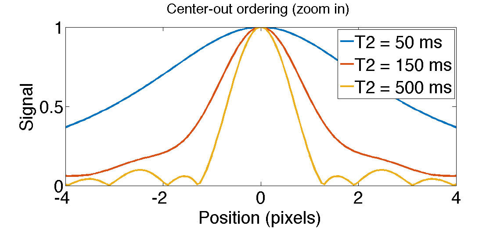
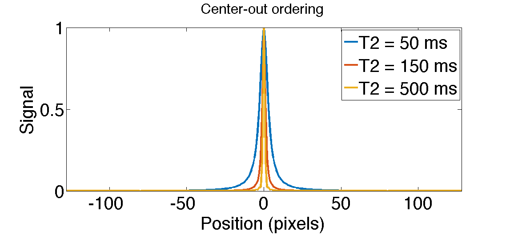
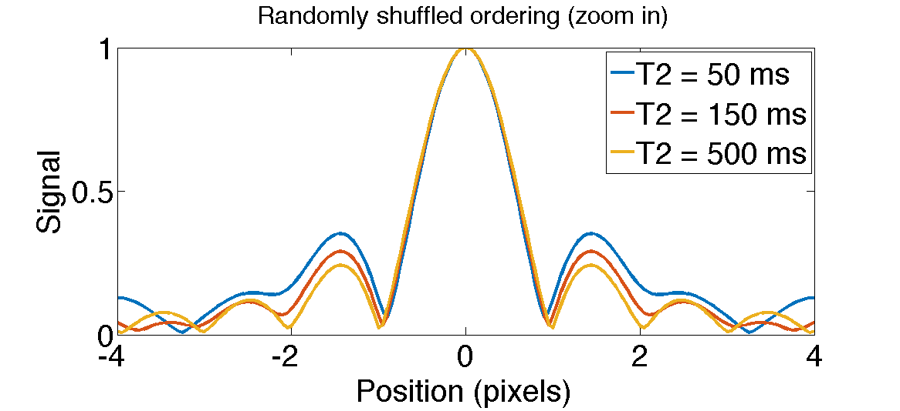
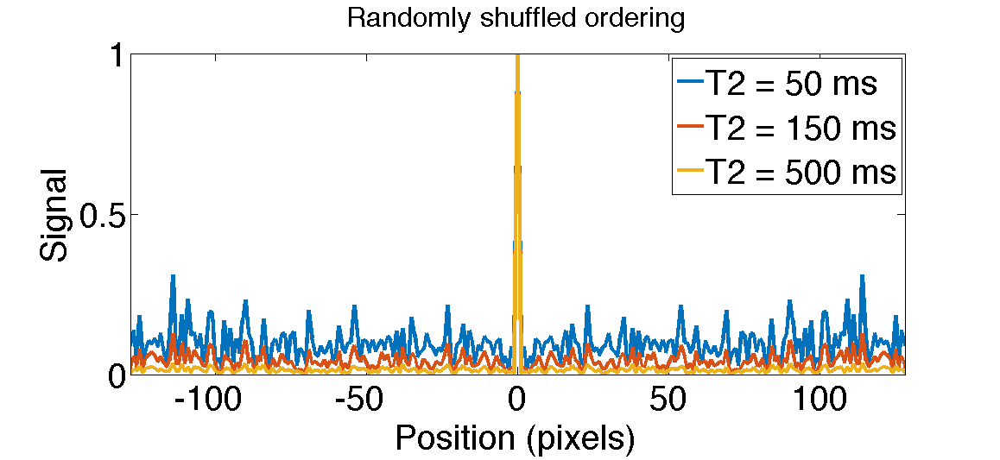

Contents
%%%%%% % This code demonstrates the T2 Shuffling point spread functions (PSF) % described in the MRM paper, % "T2 Shuffling: Sharp, Multi-Contrast, Volumetric Fast Spin-Echo Imaging" % % The code is provided to demonstrate the method. It is not optimized % for reconstruction time % % Jonathan Tamir <jtamir@eecs.berkeley.edu> % Jan 04, 2015 addpath src/utils/ normalize_psfs = true; fignum = 1; T2vals = [50, 150, 500] * 1e-3; % T2 values to simulate ETL = 80; TE = 6e-3;
Simulate exponential decay and plot the PSF for a center-out ordering.
The short-T2 components have a very broad peak, indicating image blur.
randshuffle = false; psf_1d(T2vals, ETL, TE, randshuffle, normalize_psfs, true, fignum + 0); ftitle('Center-out ordering (zoom in)', 32); psf_1d(T2vals, ETL, TE, randshuffle, normalize_psfs, false, fignum + 1); ftitle('Center-out ordering', 32); 
Simulate exponential decay and plot the PSF for a randomly shuffled ordering.
All PSFs are sharp, but short-T2 components have a low peak-to-sidelobe ratio due to incoherent artifacts
randshuffle = true; psf_1d(T2vals, ETL, TE, randshuffle, normalize_psfs, true, fignum + 2); ftitle('Randomly shuffled ordering (zoom in)', 32); psf_1d(T2vals, ETL, TE, randshuffle, normalize_psfs, false, fignum + 3); ftitle('Randomly shuffled ordering', 32); 